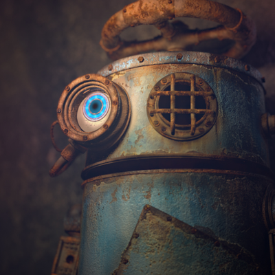

2020世界の映画祭から見るVRストーリーテリング作品の傾向
講演情報
| 資料公開予定 | 予定なし |
|---|---|
| スクリーンショット撮影可否 | 可 |
| SNS投稿可否 | 可 |
講演概要
VRストーリーテリングの進化が止まらない。 今年の世界の映画祭注目のVR作品を振り返る。さらに第77回ヴェネツィア映画祭VR部門ノミネート作品BeatのVR表現について監督自ら解説する。
講演者詳細
-
Supership株式会社VR戦略企画室所属。東京藝術大学非常勤講師。MoguraVR にて「VR映画ガイド」連載中。 アメリカで映画製作を学ぶ。TVディレクター、20世紀フォックスホームエンターテイメントジャパンで日本語版プロデューサー、サムスン電子ジャパンではGear VRを担当。2016年から数々のVRプロジェクトをプロデュースし、国内外のVR映画作品を世界中の人たちに紹介するため奔走。日本国内でVR映画を体験する場所としてオンラインポータルサービスやロケーションベースサービスのローンチにも携わる。
-

VRアニメーション監督。多摩美術大学グラフィックデザイン学科卒。 メーカーのグラフィックデザイナーを経て、2012年よりフリーランスのCGアーティストに転身。現在はVRを用いたインタラクティブなストーリーテリングに挑戦している。2020年に『Beat』が第77回ヴェネツィア国際映画祭のコンペティション部門にノミネート。2019年に『Feather』が第76回ヴェネツィア国際映画祭にて、VR部門では日本人初のビエンナーレカレッジセレクションとしてプレミア上映。ほか、ベルリン国際映画祭、釜山国際映画祭、SIGGRAPHなど世界各国で作品上映されている。